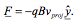

The earliest form of a railgun dates back to 1918 when French inventor Louis Octave Fauchon-Villeplee developed a cannon that used electromagnetic forces to fire a projectile. The first theoretically viable railgun (one which could be used in battle) was proposed by the research team of Nazi Germany during the second world war. It produced a muzzle velocity of 2000 m/s using a projectile of explosives weighing 0.5 kg.
Fig 1: The schematic of the German railgun.
After the war ended and all of Nazi Germany’s secrets were lain bare, many scientists took interest in the field. Throughout the middle of the century work was done in engineering motors that could power such weapons as it was stated in a 1947 report that the power required for such a weapon was equivalent to that required to power half of the city of Chicago.
In recent years, the US military have pioneered this field and have recently installed such weapons on some battleships, most notably the Zumwalt class destroyer. The weapon can reportedly fire a 3.2kg projectile at 2.4 kilometres per second, with a maximum range of over 100 nautical miles.
Fig 2: The Zumwalt class destroyer.
This weapon is at the cutting edge of military technology and it is still in its early stages of development and has not yet reached its maximum capabilities.
Here it is in action:
Throughout this section, a knowledge of field lines will be assumed. If you would like to refresh your memory, see here
In its most basic form, the railgun is comprised of two long rails connected by a projectile. The rails have current running through them in opposite directions such that the projectile also has a current running through it. These currents create a magnetic field that drives the projectile along the rails, propelling it at high speeds out of the ‘barrel’. Figure 1 displays this process below:
Fig 3: The overview of a railgun.
The Maxwell equations are a set of four equations that simply describe all electromagnetic interactions and processes that occur in the universe. They have stood the test of time and experiment. In fact they even inspired research into the field of relativity by Einstein. However, Maxwell did not find the equations himself. Rather, he collated the four equations and wrote them down in a manner that meant that they were consistent with each other. The last of the equations was discovered by André-Marie Ampère. In its most general form it is:
Here B is the magnetic field, J is the current density, E is the electric field and the greek letters are just fundamental constants. This equation states that the magnetic field around a closed loop is proportional to the current and the rate of change of electric field through the loop. This is clearer if we show it in its integral form:

If both sides are integrated with respect to a surface S. Then the following is obtained:
The lefthand side can be rewritten using Stokes' theorem that states that:
The righthand side is the line integral of the magnetic field around the boundary of S, ∂S. Thus, in integral form, Maxwell's fourth equation is:
Take an infinitely long wire with current I. The equation above states that a magnetic field is produced in a closed loop around the wire. See Figure 4:
Fig 4: The magnetic field produced by a wire.
The law also describes the magnetic field produced produced by a capacitor (two parallel plates with opposing charge densities.)

Fig 5: A capacitor.
As the current flows into one side of the capacitor, the total charge on the plate increases, increasing the electric field applied to the other plate. This change in electric field over time produces a magnetic field as described by the last term in Maxwell 4.
This law is useful in describing the magnetic field produced by the ‘rails’ of the railgun. Each rail of the railgun carries a constant current of I amps, but in opposite directions. There is no change in the electric field in the wire thus the last term of Maxwell’s fourth equation disappears.
Now choose the path as a circular loop of radius r that encloses only one of the rails and lies perpendicular to the rail.

Fig 6: Imaginary loop around one of the rails. The shape of the cross section of the rail enclosed is irrelevant to the final result.
The right-hand integral is simply the current enclosed by the loop since it is the sum of the product of the current per unit and some small element of area:
This result is true for any current or sum of currents through a closed loop. Now to evaluate the left-hand side of the equation. The loop has been carefully chosen such that the magnetic field always lies tangent. Thus, since the loop is a circle:
So the direction of the magnetic field produced by a wire is given by the right-hand rule and the magnitude at distance r is given by:
The Lorentz force describes the force experienced by a moving charged particle through an electric and magnetic field. For a particle of charge q moving with velocity v, the force exerted by the fields is:
Take the case of a constant current flowing along a wire in a constant magnetic field. Consider only the magnetic field, as the electric field is what causes the current to flow. Thus, the force on each electron is:
Where v is the drift velocity of each electron (it is actually an average, but in this case can be taken to be equivalent for all electrons.) For each section of wire dl of cross-sectional area A, the total force that acts upon it is the sum of the forces acting upon all the electrons contained within it. Assume that there is a constant number of electrons per volume n, then the number of electrons within the volume is:
Thus the force experienced by a section of the wire can be written as:
These expressions are obtained using the definition of current density.
In the railgun, the current that moves through the magnetic field is the current in the projectile. For clarity, take the following coordinate system:
Fig 7: The coordinate system used to describe the railgun.
In this system the rails are parallel to the x-axis and the projectile is parallel to the y-axis. Assume that at the moment the current is turned on, the rails and the projectile have current I0, which flows in the positive y direction along the projectile.
In this case the 'wire' is always perpendicular to the magnetic field generated by the current through the rails, so the force on some small section of the projectile is:
Now assume that the rails have width 2R such that in the coordinate system previously defined, a projectile of length L begins at y = R and ends at y = L + R:
Fig 8: The cross-section of a railgun with the assumed coordinate system.
Inserting the expression calculated for the magnetic field due to the current in the rails into the equation for the force on some small element of the projectile one obtains an expression to calculate the total force on the projectile (It is assumed that the projectile is narrow enough that the magnetic field does not change direction along its width):
This expression combines the field from both rails. Now simply integrate to calculate the total force on the projectile at the moment the current is turned on:
As shown above a charged particle moving in a magnetic field experiences a force. Consider a wire experiencing this force:
Fig 9: The Lorentz force on a wire in a uniform magnetic field.
The wire is forced to the left. This causes the electrons in the wire to have some velocity in the left-hand direction. Using the right-hand rule with this new velocity and the magnetic field there is now a force on the electrons pointing downwards! This is called a back electromotive force and works to reduce the current in the wire. This is the mathematical form of Lenz’s Law:
The direction of any magnetic induction effect is such as to oppose the cause of the field.
The equation describing the motion is found to be:
Using the Lorentz force for the case of the moving projectile, one finds that the force on the electrons is:
Thus the electric field on an electron is:
Using the system as shown in Figure 5 the electric field at a point y is given by:
Thus, the potential across the projectile is:
Now assume that the resistance of the circuit is γ when the projectile is positioned at x = 0. Also assume that the rails have linear resistivity φ. Then the total resistance of the loop at some point x is:
Using Ohm's law the current produced by the moving projectile is:
By adding this term to the current, one can model how the current around the loop varies as the projectile moves. Since they are in opposite directions, Ip picks up a negative sign:
Now that the current has been modelled, we can also model the force. Using the equation derived previously for the force experienced with a constant current, but replacing the current with the new model one finds that the force experienced is:
This equation is obviously very difficult to solve analytically, so numerical methods shall be adopted. It is a second order non-linear differential equation of the form:
where a, b, c and d are constants.
where a, b, c and d are constants.
The resulting motion of the particle from this back EMF is shown in Figure 7:
Fig 10: The position and speed of a projectile in a railgun.
Note that the speed does not seem to tail off. This is because air resistance has been ignored. Thus in this model, the longer the railgun is, the larger the muzzle velocity. With air resistance taken into account, this is not the case, and a terminal velocity can be seen to be present:
Fig 11: The position and speed of a projectile in a railgun with air resistance.